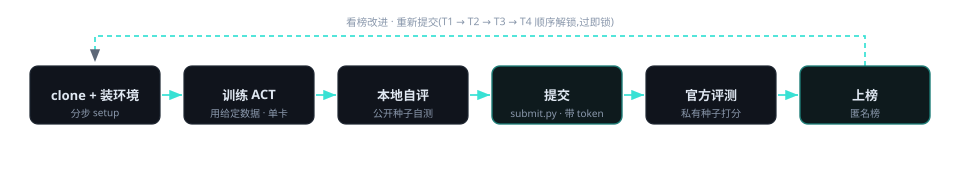

桌面上散放着红、绿、蓝三个方块。双臂机器人把它们移到桌面中央并堆叠: 先红块居中,再把绿块叠到红块上,最后把蓝块叠到绿块上——堆成稳定的三层塔。
| 项 | 说明 |
|---|---|
| 模型 | ACT(Action Chunking Transformer,~80M,PyTorch,RoboTwin 原生动作分块策略)。单张 4090 级显卡 <1h 量级可训完一轮,选手可日迭代。 |
| 竞争轴 | 对域随机化的鲁棒泛化,逐档加码;主榜只看成功率。 |
| 数据 | 主办方采的一份成功专家轨迹 raw bag 全卷共用下发;T1 处理该数据,T2 起可换随机化 / 换 seed 补采增强。 |
同一任务的四个放开层级,每档多放开一类可改项。前档达标才能交后档;各档各交各的模型、各自评测。主榜只排 T4。
| 档 | 名称 | 选手能改 | 提交物 | 计分 | 评测 |
|---|---|---|---|---|---|
| T1 | 入门通关 | 用给定 config + 数据训通 ACT | 仅权重 | 分级 SR ≥ 低阈值 → 满分 | 弱随机化 |
| T2 | 数据增强 | 图像级增强 + 用专家脚本换随机化 / 补采更多数据 | 权重 + 代码 | 分级 SR ≥ 高阈值(须过 T1) | 弱随机化 |
| T3 | 结构 / 超参 | 改 ACT 结构与超参:chunk size、hidden dim、enc / dec 层数、KL 权重、backbone、temporal ensemble | 权重 + 代码 | 分级 SR ≥ 阈值(须过 T2) | 弱随机化 |
| T4 | 硬核主榜 | 前三档招式叠加,冲最高分 | 权重 + 代码 | 纯成功率降序(主榜)(须过 T3) | 全域 OOD |
分级成功率逐 episode 取 {1 / 0.5 / 0} 后取均值;EVAL_REPEATS 取均值(默认 5)。所有阈值由主办方赛前实测标定。
评测难度逐档加码;T1–T3 在弱随机化下,T4 在全域 OOD 下。
| 维度 | 弱随机化(T1–T3) | 全域 OOD(T4) |
|---|---|---|
| 桌高 | 随机 | ±3cm 量级随机 |
| 光照 | 轻度随机 | 强随机 |
| 背景 | 固定 | 随机背景 |
| 桌面 | 干净 | 杂乱(干扰物) |
| 纹理 / 指令 | seen | unseen(未见纹理 / 语言指令) |
clone 公开仓,一键装环境;本地自评跑的就是主办方评测的同一套 harness,只换种子。评测为 in-process:加载 ACT 权重(torch)→ 同进程内跑 rollout → check_success → SR。

| 机制 | 说明 |
|---|---|
| token 鉴权 | 提交带 token,后端校验 + per-token 每日限额(DAILY_LIMIT)。无报名、无队名。 |
| 顺序解锁 | 过 T1 才能交 T2,依此类推到 T4。 |
| dev / final | dev 公开(自评 / live 榜);final 私有(赛末权威排名,解锁前显示「赛末公布」)。 |
| 安全 | 解包做 zip-slip / symlink 防护;ckpt 备案 SHA256;推理期只用白名单观测,读不到私有 seed。 |
| 开源代码 + 文档 | 完整代码(含采集脚本)开源到 GitHub,附技术设计文档,须可复现。 |
| 演示视频 | ≤ 3 分钟,屏幕录制 + 画中画(摄像头):本人出镜讲解,现场 Demo 运行。 |
匿名榜:每 token 取最佳分,只显示 token 尾 6 位。T1–T3 显示达标门(✓ 达标 / ○ 未达标 / · 未提交)。主榜次序:有 T4 成绩者在前(成功率降序),其后是无 T4 者按答题进度(过 T3 > 过 T2 > 过 T1),主榜列显示其最高达标档。每 60s 刷新。
| # | Token 尾 6 位 | T1 达标 | T2 达标 | T3 达标 | T4 成功率 / 进度 主榜 · T4 SR 在前,无 T4 按进度 |
|---|
暂无成绩